<!DOCTYPE html>
<html lang="en">
  <head>
    <meta charset="utf-8" />
    <meta name="viewport" content="width=device-width, initial-scale=1.0, maximum-scale=1.0, user-scalable=no" />

    <title>YOLO 目标检测</title>
    <link rel="shortcut icon" href="./favicon.ico" />
    <link rel="stylesheet" href="./dist/reset.css" />
    <link rel="stylesheet" href="./dist/reveal.css" />
    <link rel="stylesheet" href="./dist/theme/simple.css" id="theme" />
    <link rel="stylesheet" href="./css/highlight/github.css" />

    <link rel="stylesheet" href="./assets/custom.css" />

  </head>
  <body>
    <div class="reveal">
      <div class="slides"><section ><section data-markdown><script type="text/template">

<div class="middle center">
<div style="width: 100%">


# YOLO 目标检测

<hr/>

2023 年人工智能与计算机学院「数字图像分析与应用」课程

By 冯则涛

<!-- ←/→ Space Home End 翻页 -->


<div style="text-align: right; margin-top: 2em;">
<p>2023.11.10&emsp;&emsp;&emsp;</p>
</div>

</div>
</div>

</script></section><section data-markdown><script type="text/template">
<!-- .slide: data-background="images/background.png" -->

## YOLO 目标检测

- YOLO 介绍
- YOLO 算法的网络结构
- YOLO 算法流程
- YOLO 算法损失函数
- YOLO 算法的结果
- YOLO 算法的缺点
- YOLO 算法的改进


</script></section></section><section ><section data-markdown><script type="text/template">
<!-- .slide: data-background="images/background.png" -->

<div class="middle center">
<div style="width: 100%">

# Part.1 YOLO 介绍

</div>
</div>

</script></section><section data-markdown><script type="text/template">
<!-- .slide: data-background="images/background.png" -->


## YOLO 介绍

- 目标检测：解决“在哪里？是什么”的问题
- YOLO 是目标检测算法中的一种 One Stage 算法
    - 直接在网络中提取特征来预测物体分类和位置
    - 任务流程：特征提取 -> 分类/定位回归
    - YOLO 将物体检测作为回归问题求解，基于一个单独的 end-to-end 网格
- YOLO 任务：在一张图片中找出物体，并给出它的类别和位置

<center>
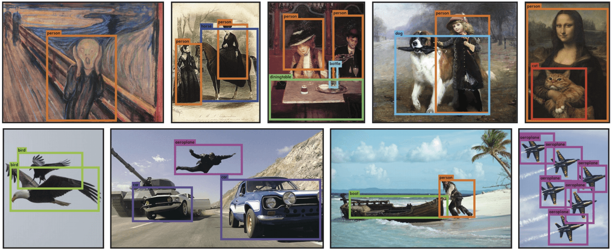
</center>

</script></section><section data-markdown><script type="text/template">
<!-- .slide: data-background="images/background.png" -->

## YOLO 介绍

<p style="color: red"> 核心思想：利用整张图作为网络的输入，直接在输出层回归 bounding box 的位置和 bounding box 所属的类别 </p>

- bounding box：目标外围带颜色的检测框

<center>
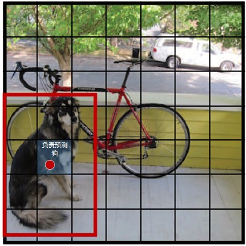
</center>

</script></section><section data-markdown><script type="text/template">
<!-- .slide: data-background="images/background.png" -->

## YOLO 介绍

<center>

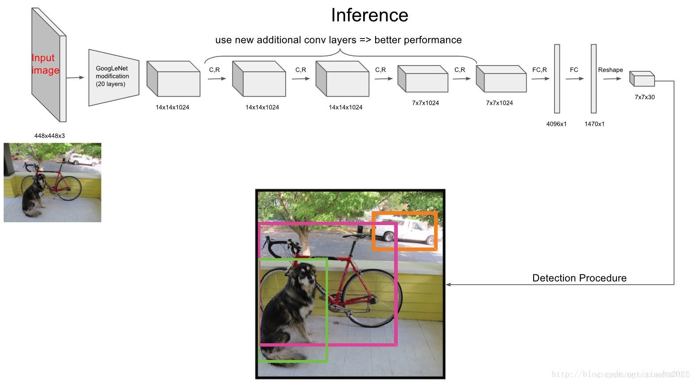

YOLO pipeline

</center>


</script></section></section><section ><section data-markdown><script type="text/template">
<!-- .slide: data-background="images/background.png" -->

<div class="middle center">
<div style="width: 100%">

# Part.2 YOLO 算法的网络结构

</div>
</div>

</script></section><section data-markdown><script type="text/template">
<!-- .slide: data-background="images/background.png" -->

## YOLO 算法的网络结构

- 网络结构借鉴 GoogLeNet，具有 24 个卷积层，2 个全连接层，其中使用了 1x1 卷积层（跨通道信息整合）和 3x3 卷积层替代 inception 模块
- 卷积层用来提取图像特征，全连接层用来预测图像位置和类别概率值


<center>
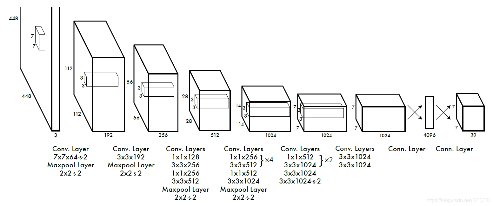
</center>


</script></section><section data-markdown><script type="text/template">
<!-- .slide: data-background="images/background.png" -->

## YOLO 算法的网络结构

- 输入：448x448x3，需要将图片 resize 到 448x448x3
- 输出：7x7x30
    - 7x7 表示将图片分成 7x7 个网格
    - 最终输出 tensor 的前五个数值，分别为 bbox 的中心坐标 x,y，bbox 的宽高 w,h，以及 bbox 的置信度
    - 每个单元格会预测 B 个边界框，且给出预测出 C 个类别的概率值，即每个单元格预测 5B+C 个值
    - 预测的 tensor 大小为 SxSx(5B+C)，即 7x7x30


<center>
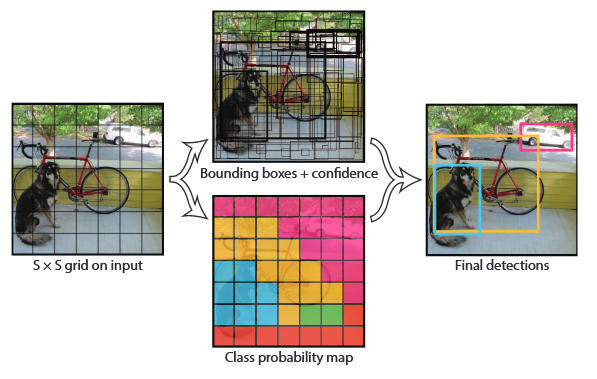
</center>

</script></section><section data-markdown><script type="text/template">
<!-- .slide: data-background="images/background.png" -->

## YOLO 算法的网络结构

- YOLO 并没有使用 Relu 激活函数，而是使用 leaky rectified linear 激活函数

<center>
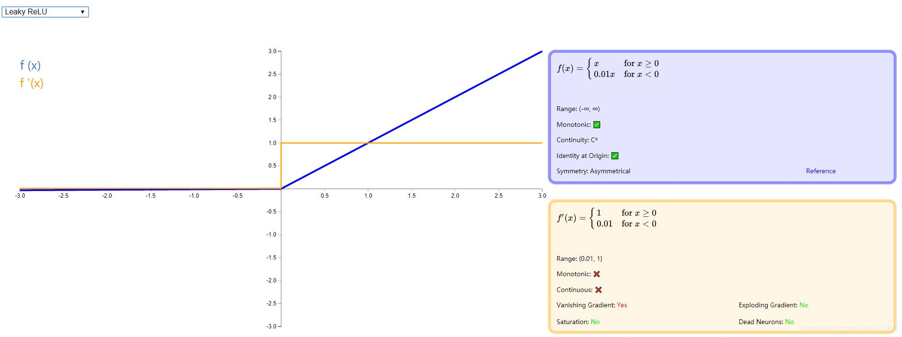
</center>


</script></section></section><section ><section data-markdown><script type="text/template">
<!-- .slide: data-background="images/background.png" -->

<div class="middle center">
<div style="width: 100%">

# Part.3 YOLO 算法流程

</div>
</div>

</script></section><section data-markdown><script type="text/template">
<!-- .slide: data-background="images/background.png" -->

## YOLO 算法流程


- 将图片 resize 到 448x448 大小
- 将图片放到网络里进行处理
- 进行非极大值抑制（NMS）处理得到结果

<center>

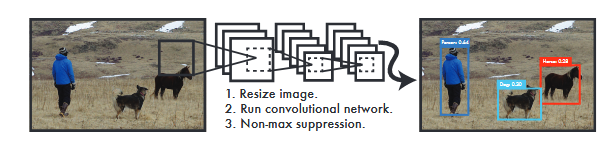

</center>

</script></section><section data-markdown><script type="text/template">
<!-- .slide: data-background="images/background.png" -->

## NMS

- NMS：非极大值抑制，用于去除冗余的 bbox（在 B 个bbox 里找最佳）

<center>

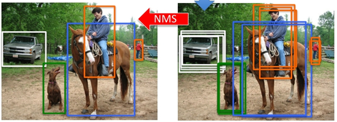

</center>

- 通过计算 IOU（两个 bbox 区域的交集比上并集） 来去除冗余框
    1. 首先计算两个 bbox 左上角点坐标的最大值和右下角坐标的最小值
    2. 然后计算交集面积
    3. 最后把交集面积除以对应的并集面积

<div align="right">

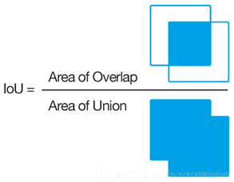

</div>

</script></section></section><section ><section data-markdown><script type="text/template">
<!-- .slide: data-background="images/background.png" -->

<div class="middle center">
<div style="width: 100%">

# Part.4 YOLO 算法损失函数

</div>
</div>

</script></section><section data-markdown><script type="text/template">
<!-- .slide: data-background="images/background.png" -->

## YOLO 算法损失函数

- bbox 的 (x,y,w,h) 的坐标误差
    - 在 Loss 中同等对待大小不同的 box 是不合理的，所以作者对 w、h 求平方根进行回归（这样做很有效，但也没有完全解决问题）
- bbox 的 confidence 预测误差
    - 由于绝大部分网格中不包含目标，导致绝大部分 box 的 confidence=0，所以在设计 confidence 误差时同等对待包含目标和不包含目标的 box 也是不合理的，所以作者在不包含 object 的 box 的confidence 误差乘以 λnoobj=0.5
    - 除此之外，同等对待 4 个值 (x,y,w,h) 的坐标预测误差与 1 个值的confidence 预测误差也是不合里，所以作者在坐标预测误差之前乘以权重 λcoord=5
- 分类预测误差
- Loss=λcoord \* 坐标预测误差+(含 object 的 box confidence 预测误差) + (λnoobj \* 不含 object 的 box confidence 预测误差) + 分类预测误差


</script></section><section data-markdown><script type="text/template">
<!-- .slide: data-background="images/background.png" -->

## YOLO 算法损失函数

<center>

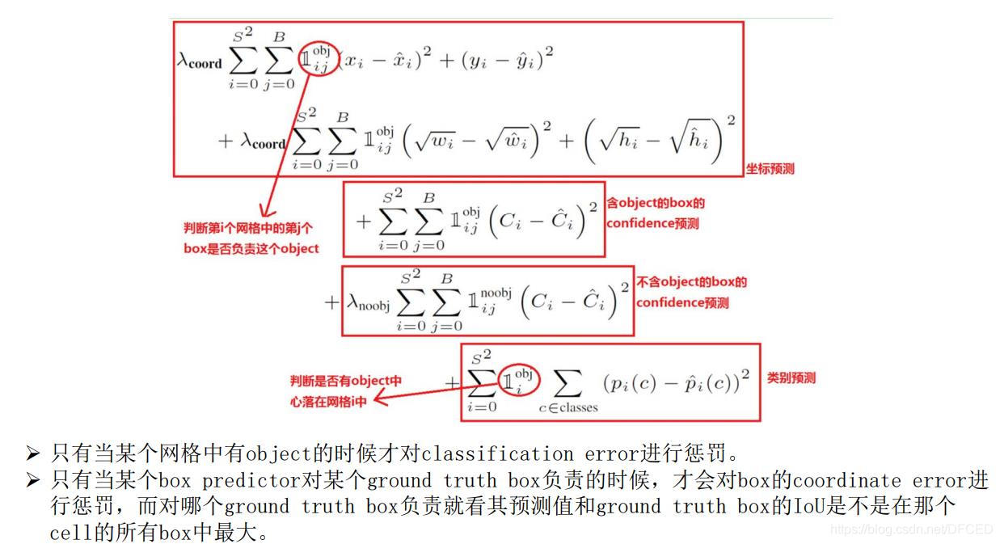

</center>

</script></section></section><section ><section data-markdown><script type="text/template">
<!-- .slide: data-background="images/background.png" -->

<div class="middle center">
<div style="width: 100%">

# Part.5 YOLO 算法的结果

</div>
</div>

</script></section><section data-markdown><script type="text/template">
<!-- .slide: data-background="images/background.png" -->


## YOLO 算法的结果

<div class="mul-cols">
<div class="col">

右表给出了YOLO与其他物体检测方法，在检测速度和准确性方面的比较结果（使用VOC 2007数据集）。

</div>

<div class="col">

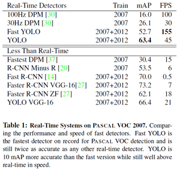

</div>

</div>


<div class="mul-cols">
<div class="col">

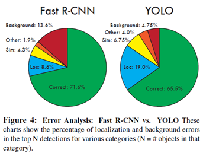


</div>


<div class="col">

论文中，作者还给出了YOLO与Fast RCNN在各方面的识别误差比例，如左图。YOLO对背景内容的误判率（4.75%）比fast rcnn的误判率（13.6%）低很多。但是YOLO的定位准确率较差，占总误差比例的19.0%，而fast rcnn仅为8.6%。

</div>

</div>

</script></section></section><section ><section data-markdown><script type="text/template">
<!-- .slide: data-background="images/background.png" -->

<div class="middle center">
<div style="width: 100%">

# Part.6 YOLO 算法的缺点

</div>
</div>

</script></section><section data-markdown><script type="text/template">
<!-- .slide: data-background="images/background.png" -->


## YOLO 算法的优缺点

- 优点
    - 快。YOLO将物体检测作为回归问题进行求解，整个检测网络pipeline简单。在titan x GPU上，在保证检测准确率的前提下（63.4% mAP，VOC 2007 test set），可以达到45fps的检测速度。
    - 背景误检率低。YOLO在训练和推理过程中能‘看到’整张图像的整体信息，而基于region proposal的物体检测方法（如rcnn/fast rcnn），在检测过程中，只‘看到’候选框内的局部图像信息。因此，若当图像背景（非物体）中的部分数据被包含在候选框中送入检测网络进行检测时，容易被误检测成物体。测试证明，YOLO对于背景图像的误检率低于fast rcnn误检率的一半。
    - 通用性强。YOLO对于艺术类作品中的物体检测同样适用。它对非自然图像物体的检测率远远高于DPM和RCNN系列检测方法。
- 缺点
    - YOLO 对相互靠的很近的物体，还有很小的物体 检测效果不好，这是因为一个网格中只预测了两个框，并且只属于一类
    - 对测试图像中，同一类物体出现的新的不常见的长宽比和其他情况泛化能力偏弱
    - 由于损失函数的问题，定位误差是影响检测效果的主要原因。尤其是大小物体的处理上，还要待加强

</script></section></section><section ><section data-markdown><script type="text/template">
<!-- .slide: data-background="images/background.png" -->

<div class="middle center">
<div style="width: 100%">

# Part.7 YOLO 算法的改进

</div>
</div>

</script></section><section data-markdown><script type="text/template">
<!-- .slide: data-background="images/background.png" -->


## YOLO 算法的改进

- 为提高物体定位精准性和召回率，YOLO作者提出了YOLO9000，提高训练图像的分辨率，引入了faster rcnn中anchor box的思想，对各网络结构及各层的设计进行了改进，输出层使用卷积层替代YOLO的全连接层，联合使用coco物体检测标注数据和imagenet物体分类标注数据训练物体检测模型。相比YOLO，YOLO9000在识别种类、精度、速度、和定位准确性等方面都有大大提升。


</script></section></section><section  data-markdown><script type="text/template">
<!-- .slide: data-background="images/background.png" -->


## Reference

- [You Only Look Once](https://www.cv-foundation.org/openaccess/content_cvpr_2016/papers/Redmon_You_Only_Look_CVPR_2016_paper.pdf)
- [图解目标检测 之 YOLO 算法 最全原理详解](https://blog.csdn.net/DFCED/article/details/105157452)
- [硬核图解，再填猛男，YOLO详解!](https://cloud.tencent.com/developer/article/1930784)
- [YOLO详解](https://zhuanlan.zhihu.com/p/25236464)


</script></section><section  data-markdown><script type="text/template">

<div class="middle center">
<div style="width: 100%">

# 谢谢大家

<hr/>

**Questions?**

</div>
</div></script></section></div>
    </div>

    <script src="./dist/reveal.js"></script>

    <script src="./plugin/markdown/markdown.js"></script>
    <script src="./plugin/highlight/highlight.js"></script>
    <script src="./plugin/zoom/zoom.js"></script>
    <script src="./plugin/notes/notes.js"></script>
    <script src="./plugin/math/math.js"></script>
    <script>
      function extend() {
        var target = {};
        for (var i = 0; i < arguments.length; i++) {
          var source = arguments[i];
          for (var key in source) {
            if (source.hasOwnProperty(key)) {
              target[key] = source[key];
            }
          }
        }
        return target;
      }

      // default options to init reveal.js
      var defaultOptions = {
        controls: true,
        progress: true,
        history: true,
        center: true,
        transition: 'default', // none/fade/slide/convex/concave/zoom
        slideNumber: true,
        plugins: [
          RevealMarkdown,
          RevealHighlight,
          RevealZoom,
          RevealNotes,
          RevealMath.KaTeX
        ]
      };

      // options from URL query string
      var queryOptions = Reveal().getQueryHash() || {};

      var options = extend(defaultOptions, {"transition":"slide","transitionSpeed":"fast","center":false,"slideNumber":"c/t","width":1000}, queryOptions);
    </script>

    <script src="https://cdn.jujimeizuo.cn/heti/heti.js"></script>
    <script src="./assets/heti_worker.js"></script>

    <script>
      Reveal.initialize(options).then(() => {
        document.querySelector(".backgrounds").setAttribute("style", document.querySelector(".slides").style.cssText);
      });
      Reveal.on('overviewshown', event => {
        document.querySelector(".backgrounds").setAttribute("style", "");
      });
      Reveal.on('overviewhidden', event => {
        document.querySelector(".backgrounds").setAttribute("style", document.querySelector(".slides").style.cssText);
      });
      Reveal.on('resize', event => {
        document.querySelector(".backgrounds").setAttribute("style", document.querySelector(".slides").style.cssText);
      });
    </script>
  </body>
</html>